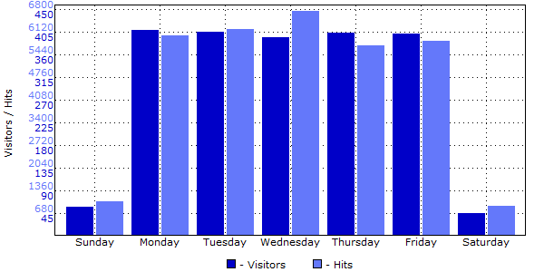

| Day of Week |
Hits |
Reloads |
Cached |
Incomplete
Requests |
Visitors |
Data transfer(MB) |
| Sunday |
1060.25 |
489.00 |
758.50 |
0.50 |
59.00 |
6.622 |
| Monday |
6032.75 |
1589.75 |
2355.50 |
21.00 |
410.00 |
62.727 |
| Tuesday |
6227.25 |
1516.00 |
2336.50 |
25.25 |
406.75 |
65.355 |
| Wednesday |
6761.75 |
2139.50 |
3346.50 |
23.50 |
394.75 |
55.480 |
| Thursday |
5718.00 |
2265.00 |
2157.50 |
19.00 |
404.50 |
56.872 |
| Friday |
5856.50 |
1935.50 |
2107.25 |
13.50 |
401.50 |
52.773 |
| Saturday |
918.75 |
445.00 |
726.75 |
4.25 |
45.50 |
6.418 |
|
Description: This report shows the mean visitor activity for each day of the week. The report will help you schedule technical support and determine the days of the week when updating website software and technical software will cause minimal disturbance.
|
|